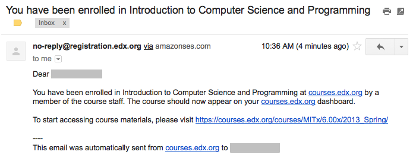

课程编写者和导师可以招收学生、查看课程参与人数以及，在必要的情况下，从教师控制面板中开除学生。
在规定的招生时间内，学生可自行参与课程。 www.edx.org 的课程对所有已注册edX账户的学生公开招生。
其他课程，比如在 edge.edx.org 网站中的课程，
它们的招生只针对了解课程URL的学生或是其他指定范围的学生。
关于课程招生的数据可在edX Insights 中查看。 您可以在教师控制面板中查看当前课程的Insights：单击 导师 ， 然后单击页面标题栏中的链接即可。更多信息请参考 Using edX Insights.
学生在参与课程之前，需要：
www.edx.org， edge.edx.org 或者安装edX平台客户端。
每个平台的用户帐户均不能相同。只要课程招生日期没过，所有注册并激活账户的学生都可以参加
www.edx.org 中的课程，或者，如果知道课程的URL，也可以参与其他课程。
但是，课程编写者及导师在课程中可以随时添加学生，无论该学生是否注册了用户帐户。
为方便管理工作，所有课程工作人员均必须注册、激活用户帐户，并参加课程。
如果您希望在课程中添加学生或其他课程工作人员，只需提供他们的邮件地址即可。 招生日期截止后，学生无法再继续参与课程，但是，您仍然可以主动添加指定的学生。
以下是添加学生的几种模式选择：
自动添加 选择此项后，您希望添加的人员无需循规蹈矩地完成课程添加步骤。 在您提供的邮件地址列表中，已注册了用户帐户的地址会立即加入课程， 您的课程会显示在登录用户的 当前课程 控制面板中。 列表中未注册账户的地址在注册、激活用户帐户后也会立即加入课程。
如果您没有选择这个选项，您希望添加的用户必须定位您的课程并自己主动加入课程。 加入后，学生才能在控制面板中看见您的课程。
给学生发送通知邮件 选择此项后，系统会自动向您提供的邮件地址发送一封通知邮件。 邮件中交代了课程名称，同时提醒尚未注册的学生用户尽快使用收到本消息的邮件地址注册用户帐户。
面是一封邮件示例。在本例中，该学生已注册、激活了edx.org账户， 且 自动添加 和 给学生发送通知邮件 选项均处于选中状态。
如何添加学生或工作人员：
您可以从CSV文件中复制邮件地址粘贴至此处。 但此功能不太适合规模较大的课程。
创建课程后，您可以查看参加课程的总人数。查看数据时，请注意：
除学生外，参与课程的总人数也包括课程作者、课程团队成员、 导师以及课程工作人员。（为了更有效地管理Studio或学习管理系统中的课程， 您最好亲自参与该课程）
学生可主动退出课程，课程作者或导师也可在必要的时候开除学生。
注意: 课程参与人数表示的是当前所有参与课程的学生及课程团队成员的总人数， 而非历史数据。
课程参与人数是所有选择证书（认证证书、旁听证书以及荣誉证书）学生的总人数。
如何查看课程参与人数：
在打开的页面中，“课程参与信息”字段后显示的是当前加入课程并得到认证的总人数。
您也可以查看或下载课程参与人员列表，详见 学生数据.
开除学生即意味着该学生被永久移除。为防止被开除的学生再次参与课程， 应关闭课程招生功能，只需在Studio中将“招生截止日期”设置为一个过去的时间点即可。 详见 设置开始和结束日期.
Note: 开除学生不会删除学生数据。被开除的学生状态数据仍然保存在数据库中， 如果学生重新参与课程，该状态数据会被重置。
如果您想开除某个学生，需提供该学生的邮箱地址：
Note
单击 开除 后，自动添加 选项将失效。